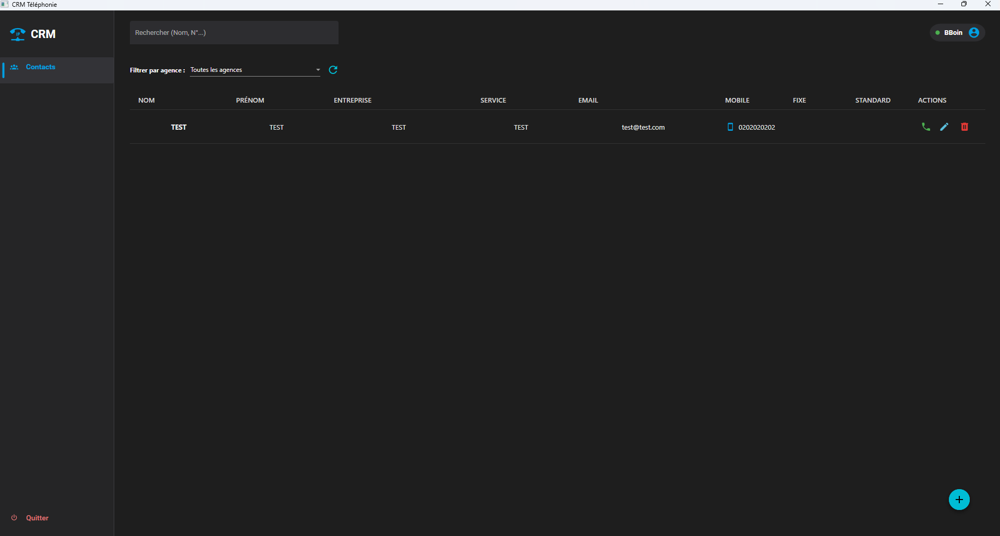
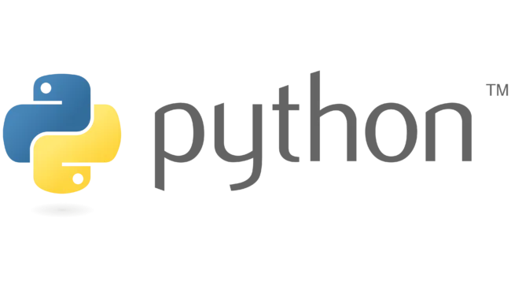
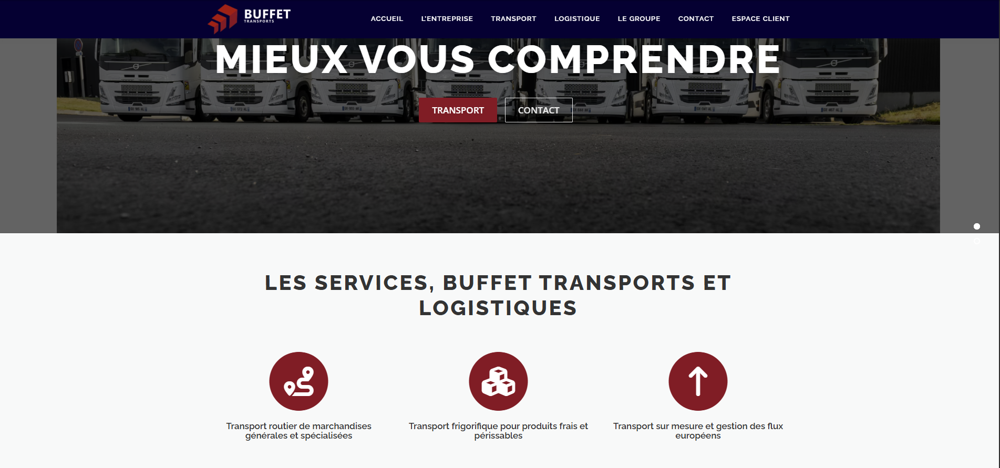
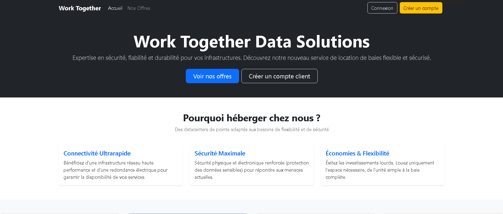
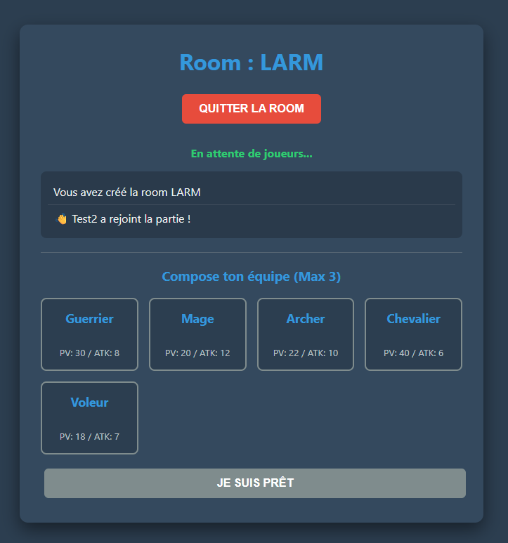

Alternant Développeur chez Ambroise Bouvier Transports
Découverte de la logique système et première approche de l'algorithmique.
Choix orienté par une forte appétence pour la conception logicielle, la création d'outils métiers et l'automatisation de tâches.
| Réalisations | Patrimoine | Incidents | Présence Web | Mode Projet | Déploiement | Org. Pro |
|---|---|---|---|---|---|---|
| — Réalisations en cours de formation — | ||||||
| Simulation Algorithmique Python | ✔ | ✔ | ||||
| POC Backend d'un jeu web | ✔ | ✔ | ||||
| WorkTogether (Data Center) | ✔ | ✔ | ✔ | ✔ | ||
| — Réalisations en milieu professionnel — | ||||||
| Site web WordPress | ✔ | |||||
| Générateur SQL vers Excel | ✔ | ✔ | ✔ | |||
| CRM Contact Manager | ✔ | ✔ | ✔ | |||


commande.cfg — modifiables sans recompilationcryptography.fernet (chiffrement symétrique)modele.cfg)
Mise en pratique de la gestion de projet Agile et du développement collaboratif.


Actualité & Vulgarisation :
V2F, Overflow, MiCode, Underscore, Fireship (Cybersécurité et Hardware)
IA :
Usage quotidien des LLM pour l'apprentissage de nouveaux frameworks.
Agrégateur de flux RSS :
Portfolio complet & Documentation :